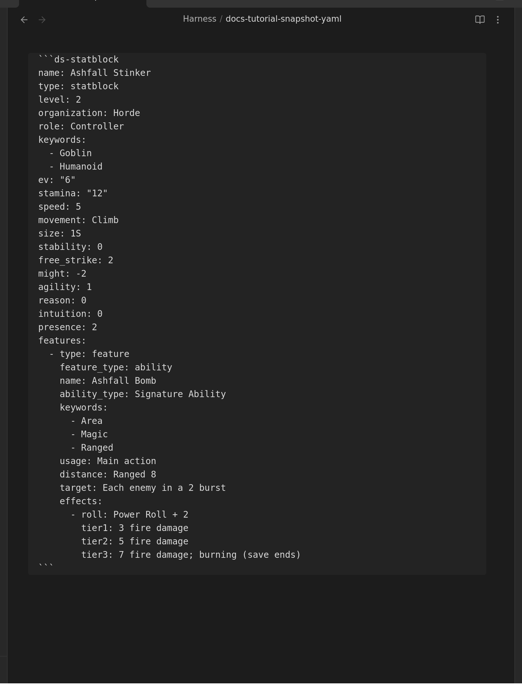

Customize a Monster¶
Take a goblin, raise its Stamina, give it a new ability, rename it — and it's yours. This is the homebrew loop, and it starts with one command.
New to the plugin? Start with Getting started.
Reference or copy? Pick on purpose¶
The plugin can put a compendium creature in your note two ways, and the difference matters:
| Insert compendium reference | Insert compendium block (snapshot) | |
|---|---|---|
| What lands in your note | a code — three short lines | the creature's full text, editable |
| When the compendium updates | your card updates too | your copy stays as you left it |
| Can you edit it? | no — it isn't in your note | yes; that's the point |
| Use it for | official content you just want to read | homebrew, reskins, "the same but nastier" |
Neither is better. Reference the monsters you're running as written; snapshot the ones you intend to change.
1. Take a copy¶
- Put your cursor where you want the creature, in Editing view.
- Open the command palette (
Ctrl/Cmd + P) and run Insert Draw Steel: compendium block (snapshot). - Search for the creature and press
Enter.
The whole creature lands in your note as text you can edit:

(Snapshots are offered for creatures, abilities and feature blocks — the things you'd actually homebrew from.)
2. Make it yours¶
Switch to Reading view to see it, back to Editing view to change it. The lines read
exactly as they look: name: is the name, stamina: is the Stamina.
Some edits worth knowing:
- Rename it — change
name:. - Make it tougher — raise
stamina:, orlevel:andev:to match. - Change what it does — every ability lives under
features:. Copy an existing one, change itsname:and its tier lines. - Change its damage — the
tier1:/tier2:/tier3:lines are just text; write whatever the ability does.
Two rules keep you out of trouble:
- Indentation is meaningful. Lines that line up belong together. Copy an existing block and edit it rather than typing a new one from scratch, and you'll rarely go wrong.
- If a card disappears, you have almost certainly mis-indented a line. Undo
(
Ctrl/Cmd + Z) back to the last version that rendered and redo the change more carefully.
Prefer not to edit text at all? Turn on Settings → Authoring → "Show edit button on rendered blocks" and every card gains a pencil that opens a form, with a live preview and a Save button that refuses to save something broken.
3. Keep it somewhere sensible¶
Your homebrew is an ordinary note — put it wherever you like, except inside the
DS Compendium folder. That folder belongs to the sync: files the plugin manages are
replaced with the official text when you next sync. Anywhere else in your vault is yours
forever and is never touched.
(If you did edit a compendium file in place before 7.0.0, the migration keeps a backup — see Migrating from 5.x to 7.0.0.)
Building one from scratch¶
Same loop without the copy: type /ds in Editing view, pick Statblock, and edit the
worked example it writes. The full field list — what every line means, which are required —
is in Statblock Element.
For a single ability rather than a whole creature, /ds → Feature; see
Feature Element.
See also¶
- Statblock Element — every statblock field
- Feature Element — abilities, traits, power rolls
- Featureblock — groups of features (Malice, Dynamic Terrain)
- Writing and editing blocks —
/ds, autocomplete, the form editor